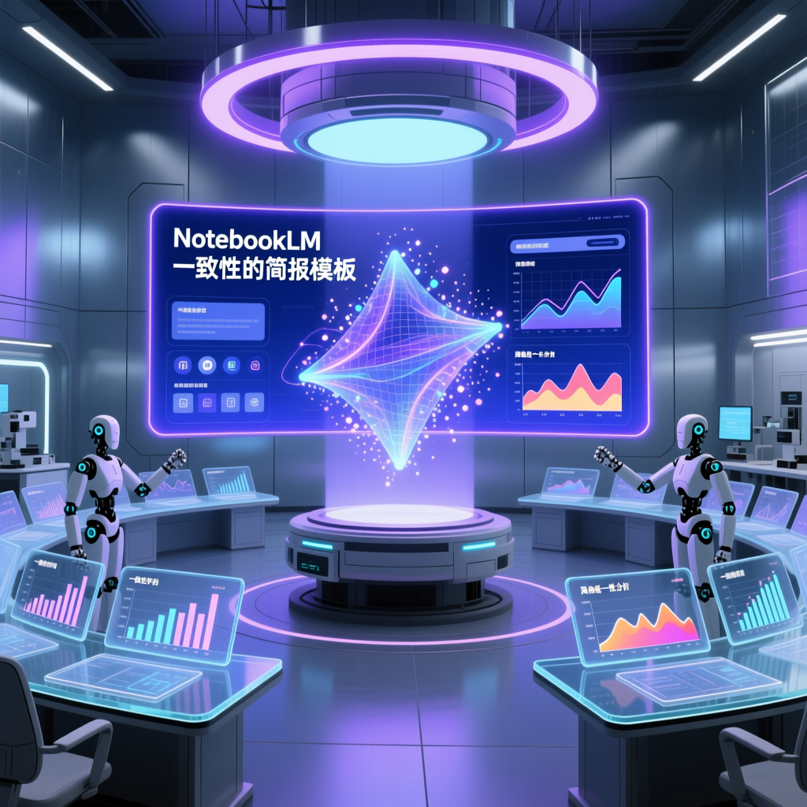

以往我們都會透過 YAML 建立自己喜歡的簡報模板，但要展現「專業」，總不能每次上台報告簡報母版都長得不一样。其實做相同「母版」真的不難，只要按照六個步驟執行即可快速搞定。

以往我們都會透過 YAML 建立自己喜歡的簡報模板。但是如果要展現「專業」，總不能每次上台報告，簡報母版都長得不一样吧？
其實做相同的「母版」真的不難。只要按照以下六個步驟執行，即可快速搞定。
把一份你已經滿意的簡報丟進「來源」區。你也可以採取一張一張的照片方式上傳到來源區。
這份模板就是你要的「視覺 DNA」——配色、字體、版面配置，AI 會從中學習。不用寫 YAML，幾張截圖或一份 PDF 就夠了。
💡 關鍵提示：模板 x 框架敘述越具體，AI 學得越準。如果你只說「商務風格」，AI 可能理解成深藍；你上傳一張淺灰底、橘色重點的模板，它就會照那個調性走。
把要做成簡報的文獻也丟進「來源」。可以是一份論文、一本書的章節、會議記錄，或任何你想轉化成投影片的資料。NotebookLM 會忠實於你的來源，不會亂加東西。
💡 建議：通常我會上傳同一系列的文獻探討放在同一個資料夾。如果要製作簡報，你再勾選相關的資料，結構清楚的 Google Docs 或標題分明的 PDF 產出品質最好。塞太多 AI 會分心，抓錯重點。
在「對話」區下指令，案例如下：
「我想採取這個『NotebookLM 參考模板』設計相同風格的簡報。這份簡報是課堂 25 分鐘分享（概估12張簡報）這個章節的閱讀心得。對象是：管理學院院長，以及博班同學。請以文字形式輸出『簡報構成案』讓我先行檢視。」
這時 NotebookLM 會幫你規劃每一頁的標題、重點，和視覺建議。你先看過，調整順序或增減內容，確認沒問題再進下一步。
直接叫 AI 生成簡報，它容易「自作聰明」亂抓重點。你先控制大綱，等於先畫好藍圖，再讓 AI 蓋房子——結果不會歪樓。
而且劇本階段你可以跟 AI 來回討論：「這頁太長，拆成兩頁」「第三頁重點順序調一下」「加一頁結論」。這時候改，比生成完整簡報後再改，省十倍時間。
「簡報構成案」確認沒問題後，點「儲存到筆記」→「新增到來源」。
這一步是關鍵。你把劇本變成 NotebookLM 能讀取的正式文件，後續生成簡報時，AI 會嚴格照這個結構走，不會偏離。
把不需要的來源文獻去除勾選！儲存到筆記再新增為來源，會變成結構化的文件，AI 讀取時更精準。
回到「來源」區，用勾選框只選兩樣：
其他雜亂的來源全部取消勾選。這一步叫「淨化輸入」。
NotebookLM 的強項就是忠實於來源，來源越乾淨，產出越精準。不要讓它同時讀一堆論文、會議記錄，又讀你的劇本——它會混淆，最後產出的簡報四不像。只選兩樣，就是給 AI 清楚的指令。
點「工作室」→「簡報」→「自訂簡報」。
語言選「中文（繁體）」，長度選「預設」。
在說明框輸入：
「請依據投影片結構提案，製作 25 分鐘課堂簡報。將儲存的 NotebookLM 簡報模板載入投影片中。目標對象是管理學院院長和博班同學。」
按下生成，等待 1-3 分鐘。NotebookLM 會在背景執行，你可以繼續做別的事。
簡報產出後，逐頁檢視。有不滿意的頁面，點「修改」按鈕，輸入具體指令——NotebookLM 只改這一頁，其他頁面不動。
滿意後匯出 PPTX，進 Google Slides 做最後潤飾：調中文字型，加 Logo，確認數據正確性。
記住：AI 負責前面 80%，你負責最後 20%。那 20% 才是專業的差別。
YAML 需要學語法、調色碼、測試輸出，一趟下來 30-60 分鐘。這個方法 10-15 分鐘就完成初稿，而且視覺風格由你上傳的模板決定——你看到什麼，AI 就學什麼。
如果你有嚴格的品牌視覺規範，YAML 的精準控制還是有價值。但對大多數人來說，「上傳模板 + 六步驟」已經夠用。先求有，再求好。
NotebookLM 的 iOS 和 Android App 現在可以完整操作這六個步驟。生成過程在背景執行，你可以切出去回訊息、接電話。匯出後直接分享到 Google Slides App 繼續編輯，全程不用開電腦。
下次有人問你「怎麼每次簡報風格都一樣？」你可以說：「我有固定母版，AI 幫我套。」
專業的一致性，從來不是偶然，而是有方法的選擇。